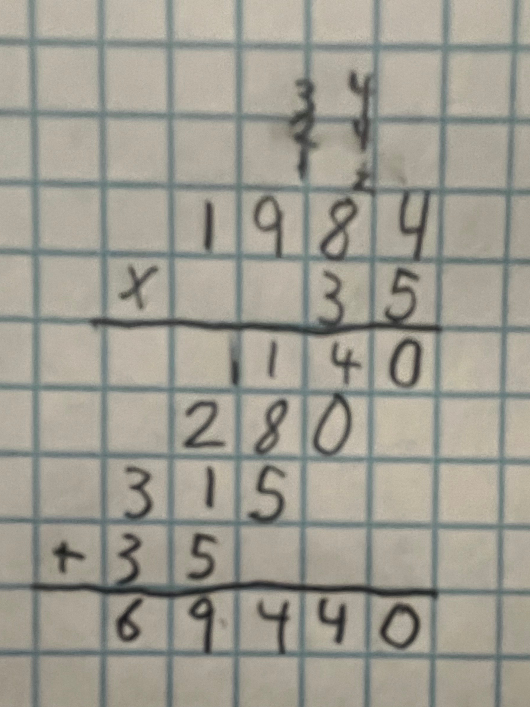
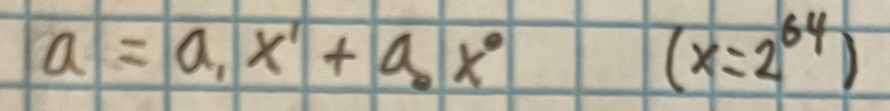

I've wanted to do this for a long time. I have several projects where repeatable pseudo-randomness is important to me across multiple platforms & languages. PRNG's (Pseudo Random Number Generators) are important for physics simulations, many numerical processes, machine learning, & for games.
There's a trade off between speed, space, & stronger statistical properties. I want a PRNG that's small, fast, & has decent statistical properties. I also want my PRNG to be 0 initializable & uniformly distributed.
Mersenne Twisters
Cryptographically Secure PRNGs
Xor Shifts
LCGs
PCGs
Mersenne Twisters are popular, but require more memory than I care to work with, so they are out the window immediately. There are also performance losses in both speed & statistical properties because of it's large size. Of note, if it initializes from a bad seed (easy to do), it can take several hundred thousand, or even millions of steps to escape it's pit of despair. Mersenne twisters memory space is so large it doesn't modify every bit of the state every step. This leads to states with a lot of 0's or a lot of 1's set to also generate outputs with a lot of 0's or a lot of 1's. Initializing from 0 is terrible for this generator. Doubly defenestrated.
Next up, Cryptographically Secure PRNG's, or CSPRNG's are ghoulish overkill for my needs, & they're secure at the cost of speed. These are very respectable generators, but I'm not writing cryptography algorithms and I want to be able to generate billions of numbers a second. Out the window.
Generators from the xor shift family are pretty good. They pass statistical tests, they are some of the fastest generators out there, and they're pretty small in memory foot print. But they're not 0 initializable. Because of the math behind these generators, 0 is a fixed point in their state space, and the rest of the space is one big loop, yielding a cycle time of (2^n)-1, which I find to be aesthetically ugly. Out the window. More seriously, missing 0 ruins uniform distribution. Practically speaking, missing one out of 2^64 or 2^128 states is imperceptible, but it's irksome that we're technically slightly biased because of that.
LCG's (Linear Congruential Generators) are some of the first RNG's of the computer era. They're small & fast, but fail some statistical tests targeted at specifically LCG's. This isn't insurmountable though, & with a few modifications to a basic LCG, you have PCG (Permuted LCG), which fixes it's statistical issues with minor performance impact. They have some nice properties such as uniform distribution over their range (very important), and jumping ahead/distance functions. In the window.
Random number generators often come in "families", where we can change base parameters, like the exact size of the state space, or whether we shift left or right. The PCG paper introduces a notion of headroom, or more colloquially, quantifying when a PRNG becomes too big to fail. A point beyond which, we can expect even terrible generators to pass our tests. These sizes are much smaller than you might think. Past about 96 bits of state, you can expect to pass most statistical tests, most of the time. The exact numbers depend on implementation, which we'll get to after we've implemented our own. 128 bits is 2 unsigned 64-bit integers, a fairly reasonable storage space putting us well above the 96 bits of state required.
The PCG website has quite a lot of very approachable writing about random number generation.
PCG is quite simple. Start with an LCG, then apply a permutation function when taking the output.
The most important trick is that we can split our larger numbers into smaller numbers, multiply those, then add them together in the right order. This is how you learned to multiply in grade school.

In the above example, we took two base 10 numbers & split them into individual digits, performing multiplications on individual digits. But we could have just as well split them into pairs of digits, if you wanted to memorize a multiplication table with 10'000 entries. The decision of where to split numbers is arbitrary, and we can choose a split that is most convenient for us. So long as we add all the parts correctly, we get the same result.
I'm using C++ for this generator, and C++ has uint64_t, but no uint128_t. Notice that these are consecutive powers of 2, so it is very appealing to make our splits down the middle of a type to simulate the next type up. I skipped over this because it was pretty trivial to implement, but I'm counting on already having 128-bit addition for this. It's not required, but it makes our lives a little bit easier. Now, breaking our 128-bit integer into two 64-bit integers is fairly straight forward.

The constants 'a1' & 'a0' are the high & low bits of the 128-bit integer 'a', and 'x' is set to 2^64. This is implicit in the code, we won't be multiplying by that number directly, we'll just have to take care to shift our sub-products the right amount. This is exactly the same process as sliding the result over a place in our grade school multiplication example. We don't explicitly multiply by any power of 10, we just shift our sub-products to the right spot. Another thing to notice is that 'a' is written in polynomial notation. The only additional wrinkle is that since x is constant, we have to be mindful of overflow when we add with 64-bit ints as opposed to 128-bit ints. using 128-bit addition lets us ignore/hide that.
For the LCG we just need to pick 2 constants. A multiplier which we need to be careful with, and then another constant to add each iteration. The only restriction on the additive constant is that it be odd. The multiplier needs to be congruent to 5 mod 8, and then also fairly large relative to a 128-bit integer (meaning about 128 bits in size). I'll be using some from this paper because that's easier than testing several thousand integers and deciding which is best. Specifically our multiplier for the purposes of the rest of this article is 0x2360'ED05'1FC6'5DA4'4385'DF64'9FCB'5CED in hexadecimal. This is the "bestest" one for 128 bits from the linked paper. Hopefully it works alright.
Given that an LCG is uniformly distributed, it is not immediately apparent that rotating the output "randomly" preserves the uniform distribution. It is desirable for that to be true, but we need to prove it.